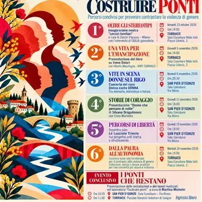

da ven 23 ott a mar 24 nov
Costruire ponti
Percorsi condivisi per prevenire e contrastare la violenza di genere. Dal 23 ottobre al 24 novembre 2026, i Comuni di Turriaco e San Pier d’Isonzo propongono sei appuntamenti tra mostre, libri, musica e incontri di approfondimento, con il contributo della Regione Autonoma Friuli…
 Indicazioni
Indicazioni
- Costi e prenotazioni
- Costo non indicato · Prenotazione non indicata
- Programma
- Programma da verificare. Apri la fonte ufficiale per orari e possibili aggiornamenti.
- In caso di maltempo
- Nessuna indicazione specifica pubblicata.
- Note
- Acquisito automaticamente dalla fonte.
L’EVENTO
Descrizione completa
Percorsi condivisi per prevenire e contrastare la violenza di genere.
Dal 23 ottobre al 24 novembre 2026, i Comuni di Turriaco e San Pier d’Isonzo propongono sei appuntamenti tra mostre, libri, musica e incontri di approfondimento, con il contributo della Regione Autonoma Friuli Venezia Giulia.
Un percorso aperto alla comunità per riconoscere gli stereotipi, ascoltare storie di emancipazione e conoscere le realtà impegnate nella prevenzione e nel contrasto alla violenza di genere.
IL PROGRAMMA
Venerdì 23 ottobre, ore 18.00
OLTRE GLI STEREOTIPI
Inaugurazione della mostra “Lessici familiari”, a cura di Cerchi d’acqua – Milano, con l’intervento di GiULiA giornaliste.
Turriaco , Sala consiliare Nilde Iotti, piazza Libertà 3.
Giovedì 5 novembre, ore 18.00
UNA VITA PER L’EMANCIPAZIONE
Presentazione del libro su Irene Deiuri, con Alberto Mauchigna – ANPI Turriaco.
Venerdì 6 novembre, ore 20.30
VITE IN SCENA – DONNE SUL RIGO
Concerto del coro Donna canta DONNA: un percorso tra memoria, resistenza e futuro.
San Pier d’Isonzo , Sala consiliare, via Roma.
Giovedì 12 novembre, ore 18.00
STORIE DI CORAGGIO
Presentazione di “Donne che pensano di notte” di Silvana Dragutinovic, con Enzo Martines.
Giovedì 19 novembre, ore 18.00
PERCORSI DI LIBERTÀ
Incontro con Le Lucciole Trieste sul progetto anti tratta e sfruttamento.
Martedì 24 novembre, ore 19.00
DALLA PAURA ALL’AUTONOMIA
Incontro sulla rete territoriale per il contrasto alla violenza di genere: istituzioni, servizi e buone pratiche per una comunità più sicura e inclusiva.
Ingresso libero
IL PROGRAMMA
Programma e orari
Appuntamenti raccolti dalle fonti elencate. Dove manca un orario, non è ancora disponibile in questa scheda.
Programma pubblicato
- Dal 2026-10-23 al 2026-11-24
INFORMAZIONI UTILI
Prima di partire
- Controllare la fonte prima di partire.
ORGANIZZAZIONE